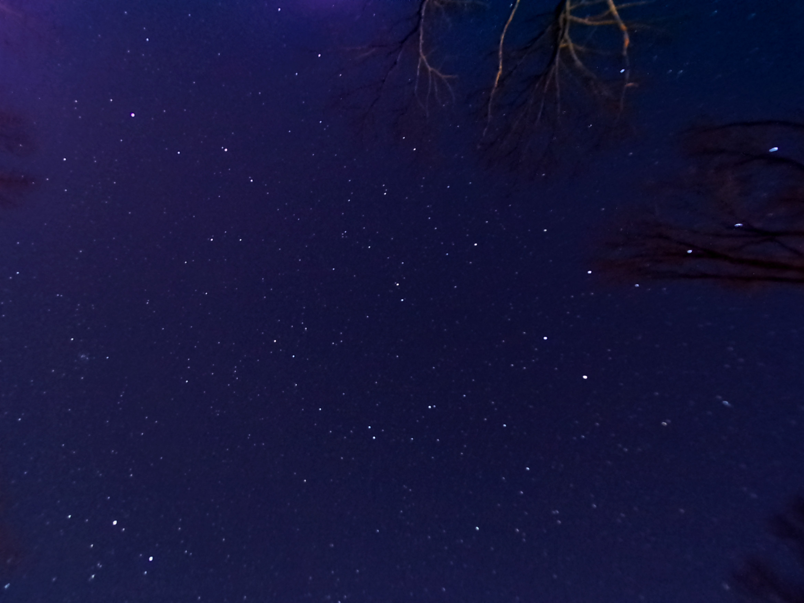
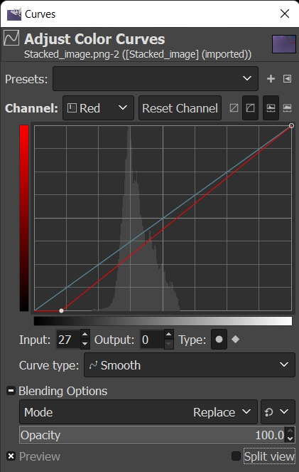
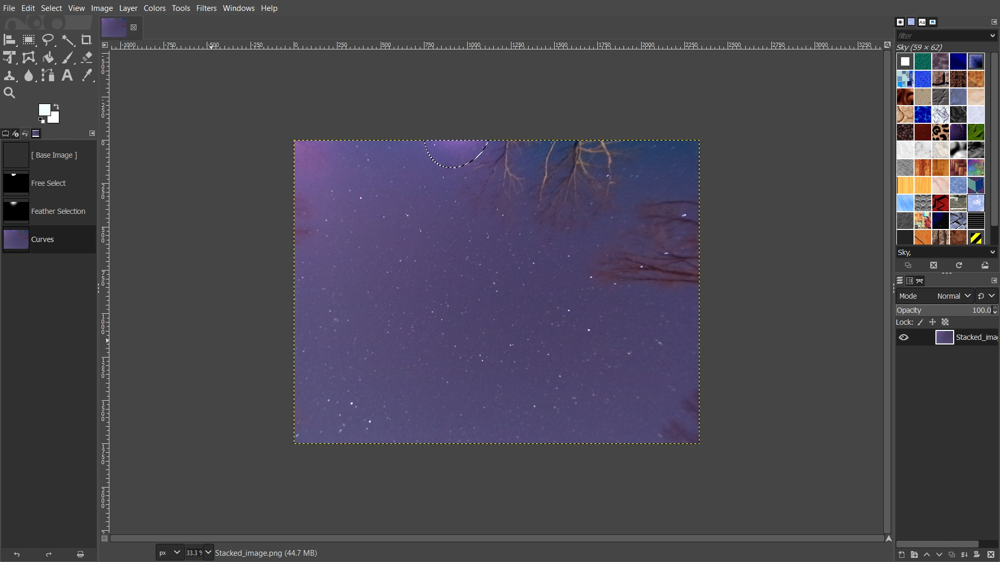
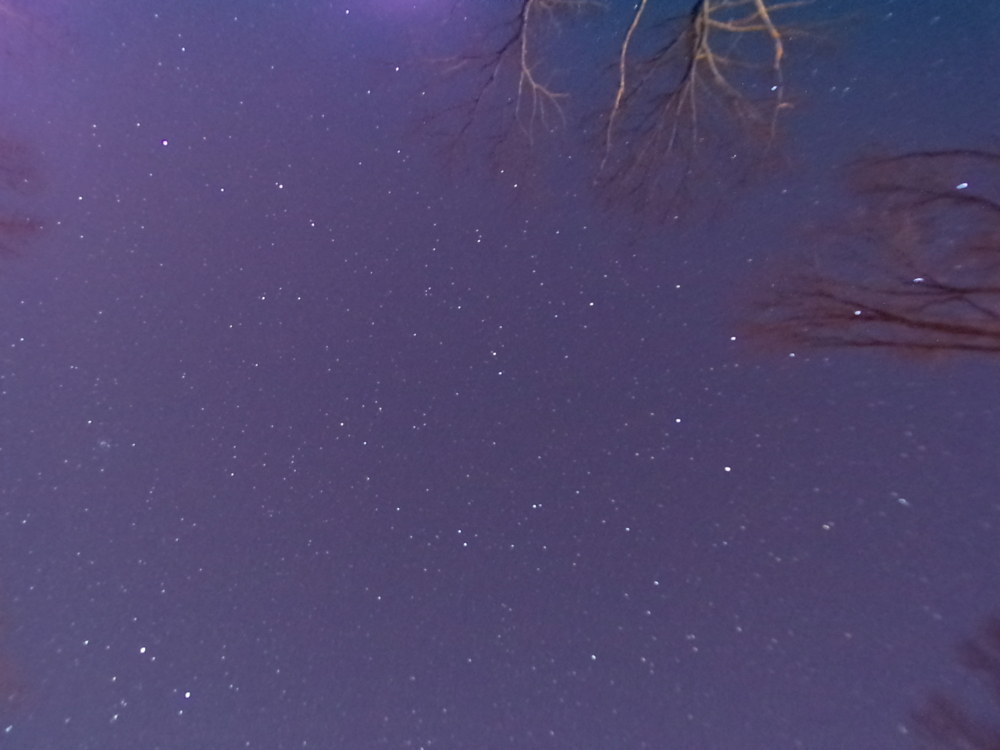
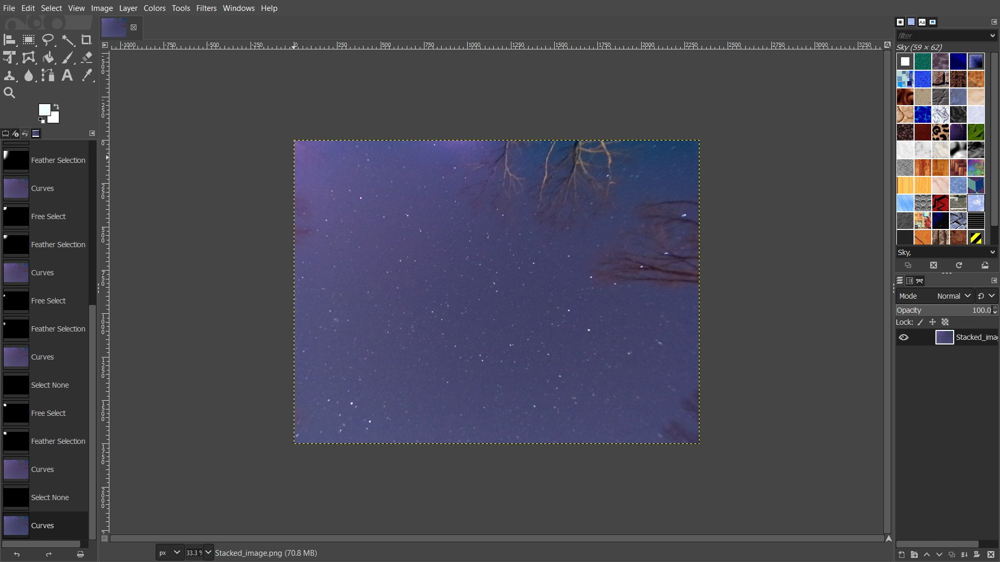
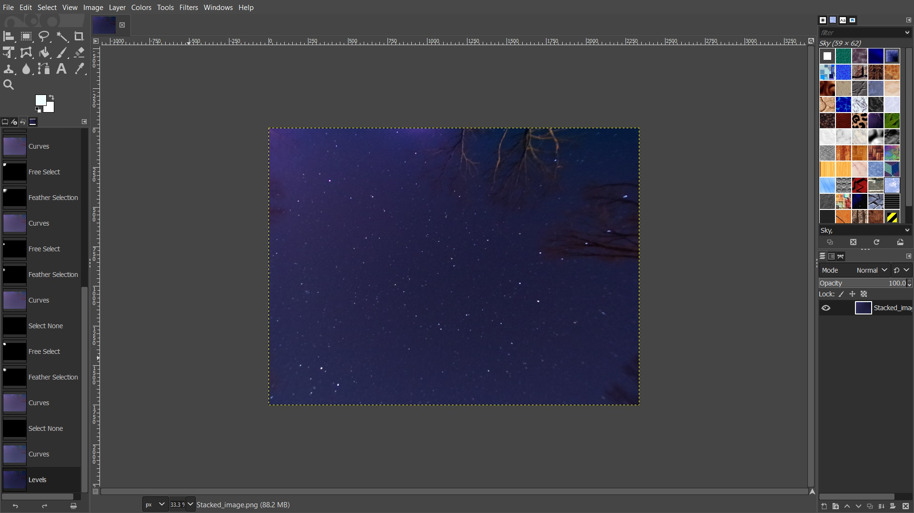
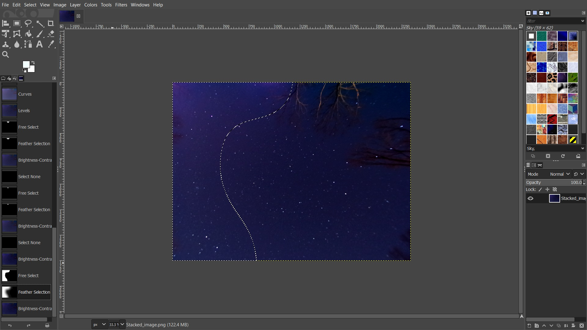
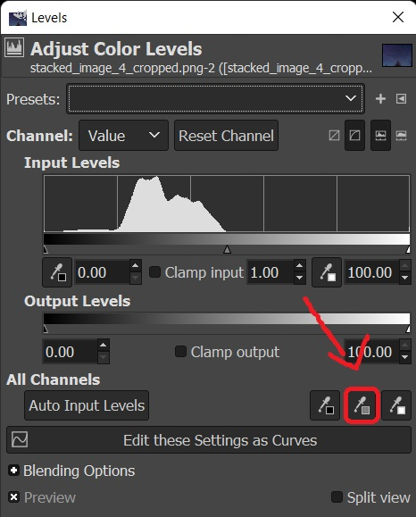
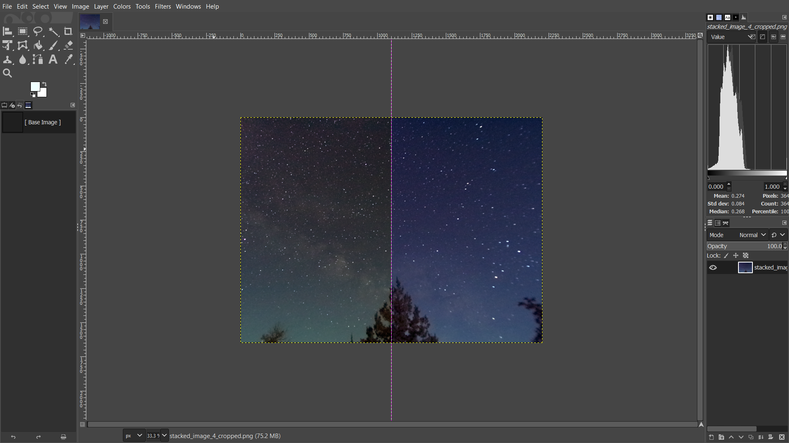

One of the biggest parts of astrophotography is editing your photos. This tutoriol will show you how to edit your jpeg astrophotography photos using the free software gimp.
Above are both the unedited and edited images
Unedited jpeg images look good, but simply not as good as edited pictures
In the image above the red lines show two problems with my picture. You may not think it's a big deal, but after editing they become more obvious if not dealt with. I believe the problems in this photo are amp glow but I will just be calling them problems. Also, this is just one way of removing the problems, another way, which I mostly do now, is using dark frames (I won't be going over dark frames) when stacking then cropping off whatever is still there. Not everyone's pictures have problems like this, if so Skip to step 2
The first thing to do is select one of the problems using the free select tool as shown in the picture below. Then click "select" (on the top bar) and in the drop down menu click feather. You will need to feather your select according to how big your problem is, I usually feather around 300 for this part
Next, in order to remove the first problem your going to need to click "Colors" (on the top bar). In the drop down menu click on "Curves". Near the top of the curves window where it says "channel" (it should currently be set to "value") click on it and change it to the red channel. Click on the bottem of the red line and either drag it down a little, or click on the small arrow facing upwards where it says "imput".
Put the red line down until some of the problem matches the rest of the picture as seen in the image below
Now zoom in on the problem, reselect a smaller area where the pink mostly is, and feather (I generally feather around 150 for this part). Then use the curves to make the problem match the rest of the picture in the sense of blue and red. the problem might still be too bright.
If the problem is too bright, simply click on "Colors" and click on "Brightness-Contrast" in the drop down menu and adjust the brightness to match the rest of the picture the best possible. Then you can unselect by pressing shift + ctr + A
Repeat the process with all of the problems
The picture with all the problems fixed
The first thing to do in this step is removing some red from the picture, (this part is optinal) click on "Colors" then "Curves" and then switch to the red channel, increase the imput on the bottem of the red line until the picture doesn't have a red tint.
The second thing to do in this step is using the "Levels" to make the picture darker and to make the stars stand out more. Click on "Colors" and in the drop down menu click on "Levels". Now in the "imput levels" section use the slide the middle slider right until the picture is as dark as you want it.
If you didn't make some of the "problems" (referring to the last step) dark enough, then now is a good time to make them a little darker.
If your photo is of or near the core of the milky way then after all of the problems are fixed I recommend you doing part 5 of this step before parts 2, 3, and 4
The third thing to do in this step is to increase the contrast (in "Brightness-Contrast" which is in "Colors"). Basically just increase the contrast until the picture looks the best, Just don't go to far.
The fourth thing to do in this step is to even out the brightness. Select (using the "free select tool") any brighter areas in your picture and darken them, using "Brightness-Contrast", until they look the same as the other areas in your image
If there are a lot of trees in your picture you may need to use the "free select tool" to select the trees, then feather around 50-120. Then decrease the saturation by clicking "Colors" then in the drop down menu you can click "Saturation" and then decrease it until the trees look more normal. You just can't decrease the saturation to much, or the sky around the trees will look gray.
The fifth (optinal) thing to do in this step, which I would actually recommend you do this after the first part in this step assuming that all the problems are fixed, is to fix the color balance if your picture is of or near the core of the milky way. To do this, click on "Colors" and in the drop down menu click on "Levels" then click on what looks like a color picker with a gray square. (see picture below)
Now click anywhere on the picture make sure to click a lot of times around the photo to figure out what looks best.
Remember that every photo is different, so experiment with other ideas/tools in gimp as well.